Return to the main page
Return to the main page
The model neuron that we saw in the last simulation is an example of what has been called the "platonic neuron". It is an idealized picture, in which the dendrites have synaptically activated channels and the soma has voltage activated Na and K channels. Excitatory PSPs that originate in the dendrites propagate passively to the soma, undergoing some attenuation. If they are of sufficient magnitude when they reach the soma, they can raise the membrane potential high enough to initiate action potentials. Many neurons fit this description, but this is not always the case.
The neuron firing patterns that we saw in the Neuron tutorial in the last lecture and the Squid tutorial in the lecture on the Hodgkin-Huxley model fired with regularly spaced action potentials. BoG Chapter 7 (Bower and Beeman, 1998) was assigned as reading for this lecture. It describes a variety of ionic conductances found in neurons that differ from the "squid-like" Na and K conductances that were used in these tutorials. Figure 7.1 shows a variety of firing patterns from molluscan neurons that include tonic firing, bursting, and "chattering".
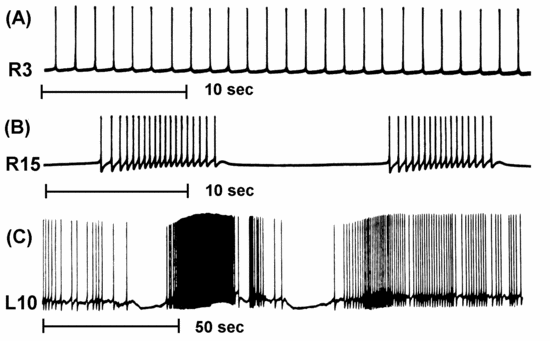
Current clamp experiments on neocortical pyramidal cells often show results similar to this example of a GENESIS cortical pyramidal cell simulation:
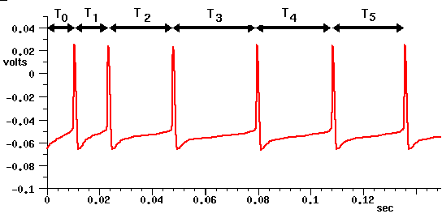
This shows a spike latency T0, and spike frequency adaption, in which the interval between spikes increases with the time that the neuron is stimulated with the current pulse. It is believed that this might provide a mechanism for processing behaviorally relevant stimuli.
Now, I'd like to talk about simulations involving a cell that
doesn't fit this simple picture, and show some simulation results.
The Squid, Neuron, and Cable simulations that we have used so far were
written as educational tutorials, rather than as way to learn anything
that isn't already known about neural behavior. The next two, as with
the Purkinje tutorial, were adapted from research simulations and
converted to GENESIS tutorials with the addition of some fancy
graphics and menus for modifying parameters.
The Traub Model Hippocampal Pyramidal Cell
The first of these simulations is a model of a hippocampal pyramidal cell, which was made by Traub, Wong, Miles and Michelson.
Let's take a look at a real pyramidal cell from the CA3 region of the hippocampus before we look at the model. This is the cell we used in the last lecture as an example of something we might want to model. Variations of this neuron are found in the both the cortex and the hippocampus. It has a pyramid-shaped soma and two large dendritic trees, the apical dendrites at the top, and the smaller basal dendrites at the bottom. There is also a long thin axon that you can't see here. Obviously, all this extended branching can allow for a lot of information processing of its many inputs, by making use of both temporal and spatial summation. Last time, we learned that models that attempt to study this in detail have might have hundreds of compartments. On the other hand, there have been simulations with only a few compartments, but large numbers of cells, that do a good job of describing the properties of networks of these cells in the hippocampus and the visual and olfactory cortex.
Pyramidal cells in the hippocampus show a range of interesting firing patterns. With no external input, a cell fires bursts of action potentials every few seconds. With increasing amounts of stimulation, the frequency of bursts increases. With even larger amounts of input, the cell switches over to a pattern of regular firing instead of bursting. During an epileptic seizure, the bursts in different cells become synchronized over large portions of the hippocampus. So, there are lots of good reasons for wanting to understand more about the behavior of these cells. In fact, this model was constructed for use in a network model of a portion of the hippocampus in order to study causes of this synchronized firing.
In many cells, the voltage activated channels are concentrated near the base of the soma in the region called the "axon hillock" near the axon. The channels in the dendrites tend to be synaptically activated channels. It turns out that pyramidal cells have voltage activated channels in the dendrites as well, and these seem to have a lot to do with the bursting patterns.
The soma and its nearby compartments contain voltage activated Na and K channels that are somewhat like the ones that Hodgkin and Huxley studied in the squid axon. However, the interesting behavior of this cell arises from at least four other kinds of ion channels that are known to exist in pyramidal cells. Data from voltage clamp experiments was used to model the dynamics of these channels and to make reasonable hypotheses about their distribution throughout the cell. Once we have verified that the model can reproduce experimental results, we can use the simulation to understand the ways in which the various channels interact and produce distinctive bursting patterns of action potentials.
Calcium channels turn out to be particularly important. These are spread throughout the cell, but are most concentrated in the middle and distal dendrites. Ca has a high equilibrium potential, so Ca ions can travel inward and can produce action potentials like Na. However the Ca conductance only becomes activated at high voltages, so it needs to be triggered by Na action potentials. There is also a much larger time constant for inactivation, on the order of 200 msec.
Not only do Ca channels have a direct effect on the membrane potential, but they have an indirect effect as well. There are two types of K channels whose activation depends on the concentration of Ca in the cell. The potassium C-current is fast and depends on both Ca concentration and voltage; The AHP (after hyperpolarization) current is slow and depends only on Ca concentration. The transient A current is an inactivating potassium current that depends only on V. It affects the interval and onset of action potentials, but has a relatively small effect in this model.
To summarize, we have the following conductances:
Na - fast, depolarizing
K - slower, non-inactivating, hyperpolarizing
Ca - high threshold, inactivates slowly, depolarizing
C - K conductance that depends on [Ca] and V, fast, hyperpolarizing
AHP - K conductance that depends on [Ca], slow, hyperpolarizing
A - K conductance that depends on V, inactivates, hyperpolarizing
We will see that there is an interesting interplay between these different channels.
This simplified model has 19 compartments with a soma in the center and two linear chains of compartments to represent the apical dendrites (fat) and the basal dendrites (thin).
Let's run the simulation and see what we can discover.
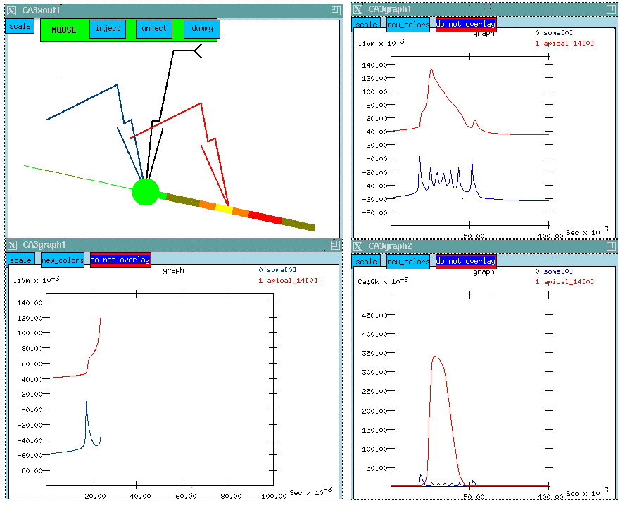
I've already planted recording electrodes in the soma and at a point midway along the apical dendrite where there is a high concentration of Ca channels. The control panel at the left allows us to perform different experiments on the cell, ranging from current and voltage clamp experiments to various ways of stimulating synaptically activated channels. We'll chose a current clamp experiment with an injection current of 0.3 nA. We'll plant an injection electrode in the soma.
In this static web version of the simulation, we are showing a composite image of the simulation results. The two windows at the LEFT, show a point part way through the simulation. The windows at the RIGHT will be described a bit further on.
If you can view quicktime movies (and have a fast enough connection), you can watch this movie of the simulation.
We can see some interesting bursts of color which represent the membrane potential in the various compartments. Although it happens pretty fast, you might notice that the "hot" colors correspond to peaks in the potential which are plotted below. Let's try to make some sense out of this plot. The lower one shows a burst of action potentials in the soma which terminates after about 50 msec. If we were to run the simulation longer, we would see another burst in about a second. The curve above, which has been displaced by 100 mV for clarity, shows what's happening out in the apical dendrite. Here the spike is very broad and somewhat delayed. There aren't any Na channels in this region, but the density of Ca channels is high, so we might suspect that we are seeing a Ca action potential on top of whatever soma potential that has propagated to this point.
We wonder what this might have to do with the termination of the burst of action potentials.
As we are interested in the Ca channels, I've brought up another window, which will let us plot the Ca conductance at the two points. (This is shown at the LOWER RIGHT, for the complete simulation run. The plot above it shows the membrane potential for the entire 100 msec run.) we are interested in the Ca channels, I've brought up another window, which will let us plot the Ca conductance at the two points. (This is shown at the LOWER LEFT, for the complete simulation run. The plot above it shows the membrane potential for the entire run.)
Click here to see the previous figure again
Watch the propagation of the action potential in the soma along the dendrite. Now, we are starting to see something happening near our probe in the apical dendrite. As we get to the peak in Vm in the middle of the apical dendrite we see a hot yellow spot in this region where the membrane potential is high. There aren't any Na channels here, so this must be coming from Ca ions. Our hypothesis is that, when the action potential propagates to the dendrite, it raises the membrane potential. We can see a bump corresponding to the first one. By the time the second one arrives, it has raised the mebrane potential high enough to activate the high threshold Ca channels. This produces a broad action potential in the dendrite. (This is another example of temporal summation.)
As we continue stepping the simulation, we see several spikes about 5 msec or less apart. Evidently the broad Ca peak is keeping the cell depolarized to allow Na spiking while the Ca-dependent K channels are trying to repolarize it and stop the Na spikes. The K conductances build up as calcium enters the cell, and they eventually win.
The plot of Ca conductance below confirms this suspicion. There is a huge broad peak in the Ca conductance in the dendrite corresponding to the voltage peak. There is a tiny blip showing the Ca conductance in the soma. The Ca channel density in the soma is fairly low, so we aren't seeing much conductance.
Click here to see the figure one more time
We can test this hypothesis by setting the density of selected channels to zero. This simulation lets us use the mouse to select various compartments and channels for editing. I'll set the maximum Ca conductance to zero for all the compartments and then we'll run the simulation again.
Now we have all the Calcium channels in the cell disabled. So not only will there be no Ca conductance, but we won't have any of the K currents which depend on Ca concentration. What differences can we see?
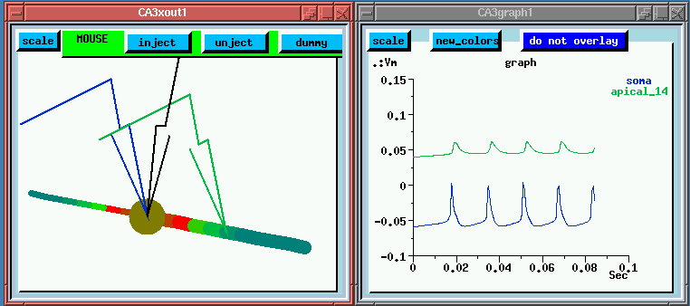
For one thing, the spike interval is larger, around 20 msec, because we don't have the Ca channels adding to the depolarization. Also, there is continuous regular firing instead of bursts. Although we haven't directly shown this here, it is because the calcium concentration dependent K channels aren't being activated.
You may have also noticed that the spread of activation into the dendrites is passive. Looking at the colors we can see that the membrane potential is highest near the soma, with no flashes of "hot spots" in the dendrites. It looks like the "platonic neuron" with no action potentials ocurring in the dendrites.
Here is a quicktime movie
of the simulation, with the calcium channels blocked.
The Piriform Cortex Simulation
Now, I'd like to talk about something else that involves pyramidal cells. Pyramidal cells occur not just in the hippocampus, but also in the cortex. They make a major contribution to the way that information is processed in cortical areas.
A lot of studies of the visual cortex have been made, but we will look at the olfactory cortex. This is a rather interesting area of the brain. Although it has rich and complex behavior, it doesn't have as many levels of processing as occur in the visual cortex. When you study the visual cortex, you will learn that there are a lot of levels of feature extraction that occur in the various layers of the visual cortex.
There is also some pretty sophisticated processing of different odors in the olfactory cortex. We'd like to understand how a rat can distinguish what is good to eat from what isn't.
The circuitry is a little simpler here. We get some input from the olfactory receptors to a region known as the olfactory bulb, where some processing goes on, then it goes along what is called the Lateral Olfactory Tract (LOT) to the olfactory cortex, also called the piriform cortex.
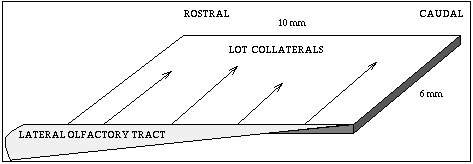
Fibers come from the front (rostral) and extend toward the rear (caudal). Axons go across the sheet of cortex to connect to the pyramidal cells. There are many more connections at the front, than at the rear, so the input from the LOT is greater at the rostral end.
Here is a wiring diagram:
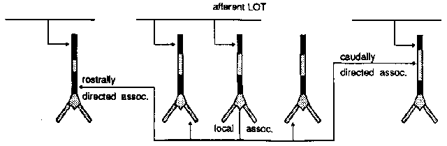
This diagram shows the several different kinds of connections to the pyramidal cells. The pyramidal cells extend downward through this layer of cortex, aligned perpendicular to the surface.
At the top, on the apical dendrites, we get connections from the olfactory bulb via the LOT providing the external input to the piriform cortex.
There are also a lot of connections between the pyramidal cells.
The rostrally directed association fibers go forward and meet other cells close to the soma (excitatory inputs).
There are caudally directed association fibers which go to the rear and hit the upper middle part of the apical dendrites, also making excitatory inputs.
There are also some local association fibers that go to very nearby cells in both directions and connect to the basal dendrites.
All of the above connections are excitatory.
And, if that weren't enough, there are also a number of inhibitory connections which are formed via interneurons. These are small neurons that take an excitatory input and release a neurotransmitter that causes an inhibition on the target pyramidal cell. We have two kinds, and they have different time constants for activation and decay of the channel conductance.
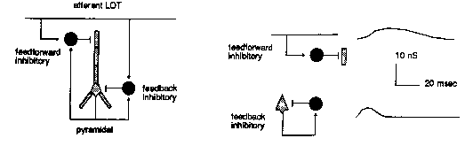
The point of the modeling is to understand how this variety of synaptic connections influences the behavior of the network. The big picture is to understand how the piriform cortex recognizes odors.
Another important motivation is to understand the origin of the 40 hz oscillations seen in the EEG recordings. These are recordings from the scalp, and are recording potentials that arise from very large populations of neurons. It isn't very selective - we get coarse mapping of neural activity, and find bursts of 40 Hz osccillations (the gamma waves) coming at about 7-10 Hz (the theta waves).
These oscillations been known to exist in the olfactory cortex for a long time. More recently they caused quite a stir when people have discovered that they occur in the visual cortex.
There has been a lot of speculation about their origin and purpose. They have been thought by some to possibly be ways to carry information. They have even been ascribed to having something to do with consciousness or the so-called binding problem in psychology. If you have neurons that fire when you recognize something red, and others that fire when you recognize a ball, how do you put them together to recognize a red ball? Perhaps this arises when the firings of these neurons is coordinated in some way, and we see coherent oscillations.
The result of this simulation suggests something maybe not quite so exciting. It seems that they are an epiphenomenon; just an intrinsic property of the network, and arise as a byproduct of the other processing which is going on. In fact, the simulation showed that these oscillations are generated even with random input.
Wilson and Bower did a GENESIS simulation of the olfactory cortex a few years ago, and modeled a network of these cells using a simple five compartment model for the pyramidal cell, with a compartment corresponding to each of the layers receiving input. They used 1500 of each of the pyramidal cells and the two types of interneurons. The interneurons use a single compartment, as they have very little dendritic structure.
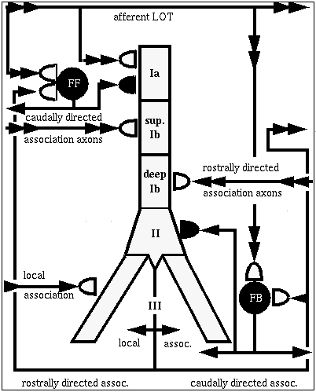
I'd like to tell you about a tutorial version of the Wilson-Bower simulation, which was created by Alex Protopapas at Caltech. This is a scaled down model, with 135 of each of these three kinds of neurons, arranged in a 9 x 15 grid.
As there is a lot to see on the screen of the simulation, I'll first show you a static picture of it.
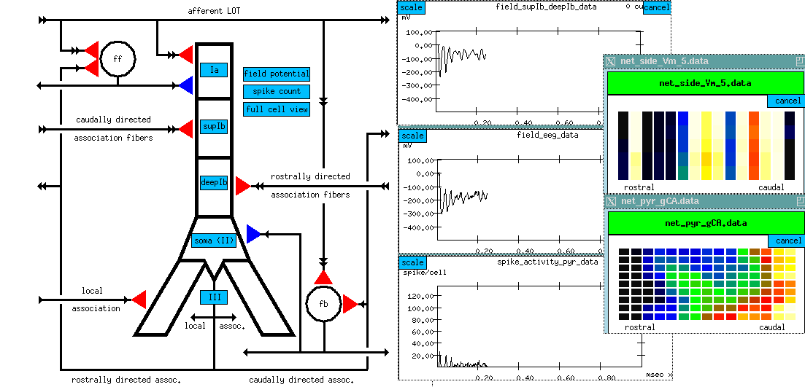
At the left, there is another picture of the cell connection diagram. But it's an interactive picture, in the simulation, you can click on the various synapses and bring up menus to change various things like the time constants. (red = excitatory; blue = inhibitory)
We can also click on things to determine what you want to plot. Some of the interesting things to plot are:
The simulated EEG recording (center plot) - it averages the extracellular potential from many of these neurons. If you look at the time scale, you can see that oscillations are coming at about 40 Hz. This has been observed in EEG recordings from rats, while sniffing odors and, when subjected to somewhat unkind things, like electric shocks to the LOT, in order to provide a strong random input.
plot of columns - this is one row in the 9 x 15 array of neurons, seen from the side (135 of each kind) we are looking at 15 pyramidal cells from top to bottom. We are seeing the membrane potential in each of the 5 compartments. In this one we can see that some of these are firing some APs (hot colors = high Vm).
The bottom plot is probably the most interesting, and certainly the prettiest - here is a view of the entire network, but it is a horizontal slice which is taken at the point right here, the Superior 1b layer - it is receiving inputs from other pyramidal cells that are at the forward end. Different colors represent the amount of activation of these synapses. In the real time display, you will see these waves propagating from front to rear - at what frequency? 40 Hz, corresponding to what goes on in the EEG pattern. We can see these yellow bands of activation propagating across the network.
Since the propagation of these waves of activation is one of the important results of the simulation, let's take another look at the cross-sectional view of the network of pyramidal cells.
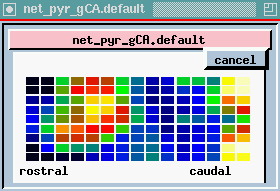 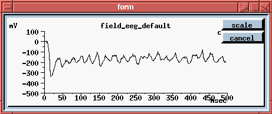
Here we're seeing the wave of oscillations in the activation of channels in the Superior 1b layer and the simulated EEG pattern.
Although the simulated input along the LOT is random, the network (which uses axonal propagation velocities and channel time constants from experimental measurements) still generates the oscillations that are seen when recording from an awake behaving animal.
The peak in the EEG at about every 25 msec is the 40 Hz gamma rhythm, occurring in bursts at the theta frequency of 7-10 Hz. The cause appears to be these feedback interneurons. If you play with the simulation and change the time constants of these, the 40 Hz oscilations go away.
It seems to be a result of the way that the network is designed, and as a byproduct of the information processing which is ocurring, the inhibitory interneurons suppress the pyramidal cells for periods of about 25 msec at a time, resulting in 40 Hz oscillations in their ability to activate. These results suggest that this natural tendency to oscillate at this frequency might be required for odor recognition, so that different synaptic inputs will arrive at particular times with respect to others.
Extracellular recordings and the use of voltage-sensitive dyes have revealed that novel visual stimuli produce waves of activity in the visual cortex of freshwater turtles. It has been suggested that the dynamics of these waves contain information about the position and speed of stimuli in visual space.
The Nenadic, Ghosh, and Ulinski (2003) large scale model of turtle visual cortex is based on the known anatomy and physiology of the varieties of neurons found in the visual cortex. It is being used to study the cortical activation when different types of moving or stationary stimuli are presented to the retina. The model has been used to show that the stimulation of spots of light presented at different points along the horizontal meridian produce different phase space trajectories of the waves. This could be used to locate the position of the spot of light, although there is presently no evidence that this information is used by the turtle in visual tasks.
The turtle visual cortex consists of the three layers of cells, with the middle layer containing pyramidal cells, and the other two containing a variety of interneurons. The model has a total of 918 neurons that consist of 3 to 16 compartments.
The lateral and medial pyramidal cells have different sizes and characteristics, so the model represents them as 368 lateral neurons (shown as squares in the simulation) and 311 medial neurons (shown as triangles). There are also 20 horizontal, 45 stellate neurons, and 44 subpial neurons in a simulated 1.6 x 1.6 mm piece of cortex. The network receives its input from the retina via 201 LGN neurons.
The pattern of excitatory synaptic connections from the LGN were based on experimental measurements and are to lateral and medial pyramidal cells and stellate cells. They are most dense at the rostro-lateral end of the cortex (lower right in the network view below), where the cortical wave begins.
The default stimulus applied is the "diffuse light flash", simulated with a 0.15 sec pulse of 0.2 nA injection current to the soma of all 201 LGN neurons. The simulation also allows stimulation of subsets of the LGN neurons to produce a stationary light spot or a moving light spot. It is also possible to provide direct stimulation to a population of of neurons (e.g. lateral cells) in a specified rectangular or circular area.
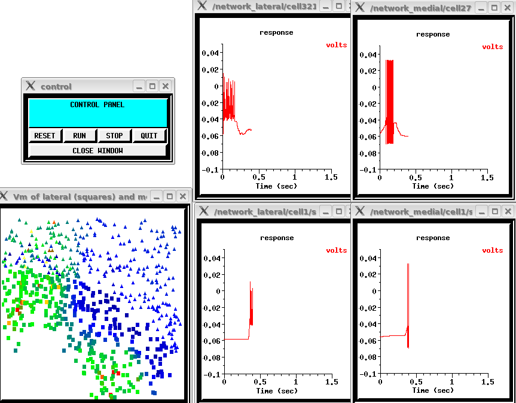
The four graphs show the network response by plotting the soma membrane potential of the medial and lateral layer pyramidal cell neurons /network_lateral/cell321, /network_medial/cell279, /network_lateral/cell1, and /network_medial/cell1. The window under the control panel shows the locations of the lateral (represented by squares) and medial (represented by triangles) pyramidal cells. During the simulation, they change color to represent the soma membrane potenial of the cells cells. This snapshot was taken at about 0.4 sec when the wave shows maximal excitation at both the upper left and lower left.
See a video clip of the simulation (MS WMV format)
For the first 0.6 seconds of the simulation, you will see the spreading wave of activation, beginning at the rostro-lateral end of the cortex about 15 msec after the flash. It propagates across the cortex and begins to die out after 600 msec. If the simulation in the video had continued longer,
The simulation scripts and documentation for the model are included in the "Ultimate GENESIS Tutorial Distribution" package from the the GENESIS web site, and also my be downloaded from ModelDB ( http://senselab.med.yale.edu/modeldb/ShowModel.asp?model=94845).
The citation for the paper with the most complete description of the model is:
Nenadic, Z., Ghosh, B. K. and Ulinski. P. (2003) Propagating Waves in Visual Cortex: A Large Scale Model of Turtle Visual Cortex. J. Computat. Neurosci. 14:161-184.
I hope these examples have given you some feel for how computer simulation can be a powerful and useful tool for understanding how the brain processes information.
Previous
lecture
Return to the main page
 Index of Lectures on Computational Neuroscience
Index of Lectures on Computational Neuroscience
 GENESIS Home Page
GENESIS Home Page {kind=link}
{kind=link}